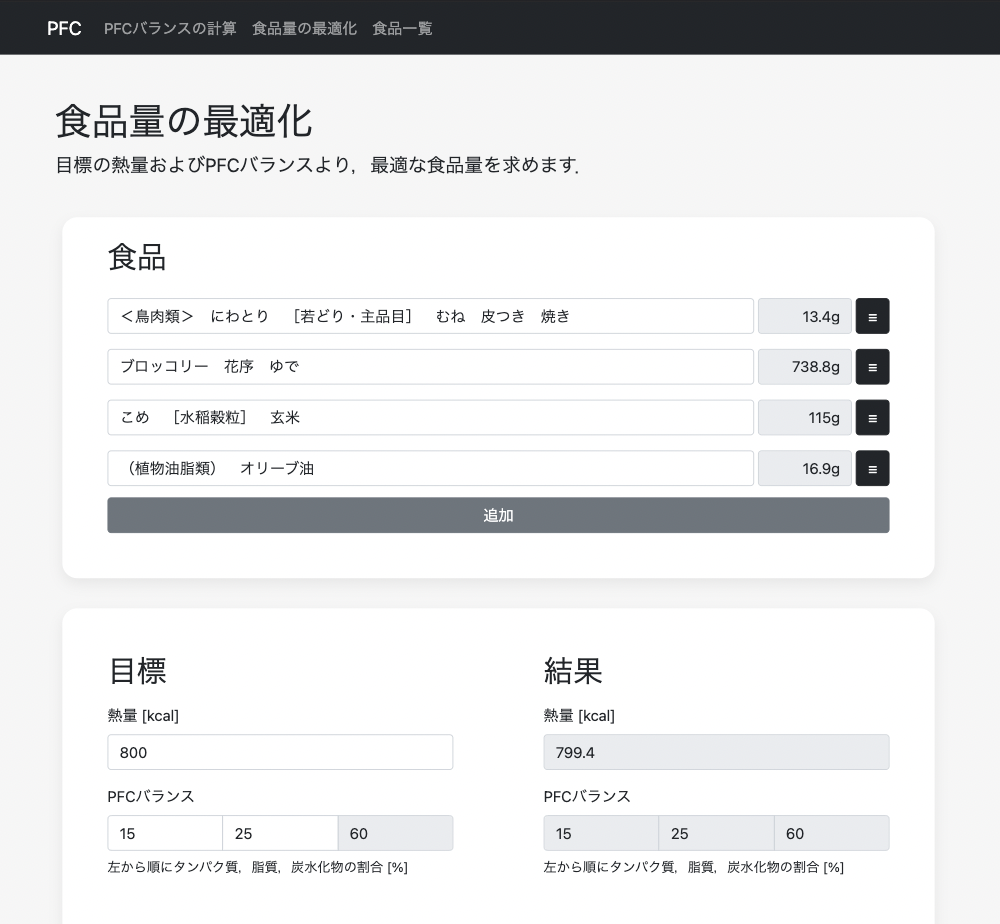

PFCバランス最適化
- 作成日: 2021年
- URL: https://pfc-optim.herokuapp.com/

PFCバランスとは，タンパク質（Protein），脂質(Fat)，炭水化物(Carbohydrates)のカロリー比率のことで，栄養バランスを表す値として使われています．このPFCバランスをもとにして，摂取すべき食品量を求めるアプリを作りました．
使用技術: Flask, Bootstrap, Heroku